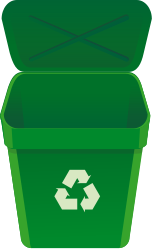

It is time for our annual recycling drive! Recycling means taking a product or material at the end of its useful life and making it a usable raw material to make another product. We have been very successful with paper and plastic products. Last year, we recycled more items than our previous three years. Let's try to do it again this year. We will have a dinner for everyone involved with the recycle drive on Saturday night. We hope to see you all there!
Recycling programs began with reusing metal during World War I and II. (Source) An active nationwide push to conserve materials and recycle those that could be used for war efforts created a feeling of patriotism when recycling. Following WWII, using landfills became a cheap and easy way to dispose of trash, so the popularity of recycling slipped. By the 1970s, Americans were again interested in recycling. The advent of the recycling symbol, emphasis on "reduce, reuse and recycle" and rising energy costs led to a renewed commitment. Woodbury, New Jersey, was the first city to mandate recycling. (Source)
According to the Ohio Department of Natural Resources, residents can recycle metals, glass, paper, cardboard, plastics, yard waste, composting and even electronics.
Recycling has many benefits for local communities as well as statewide and global resources. Recycling items...
Set your recycling bins at the end of your driveway each Thursday evening. Recycling trucks will come to your neighborhood each Friday morning to collect the plastic and paper goods. For aluminum, glass, cardboard and oversized items, drop recycling in the large bins at the Green Team office at 245 Main Street.
For information regarding this Web site, recycling products, or sponsoring a recycling drive, please e-mail: Donna Jo McCauley at donna.mccauley@isp.com.